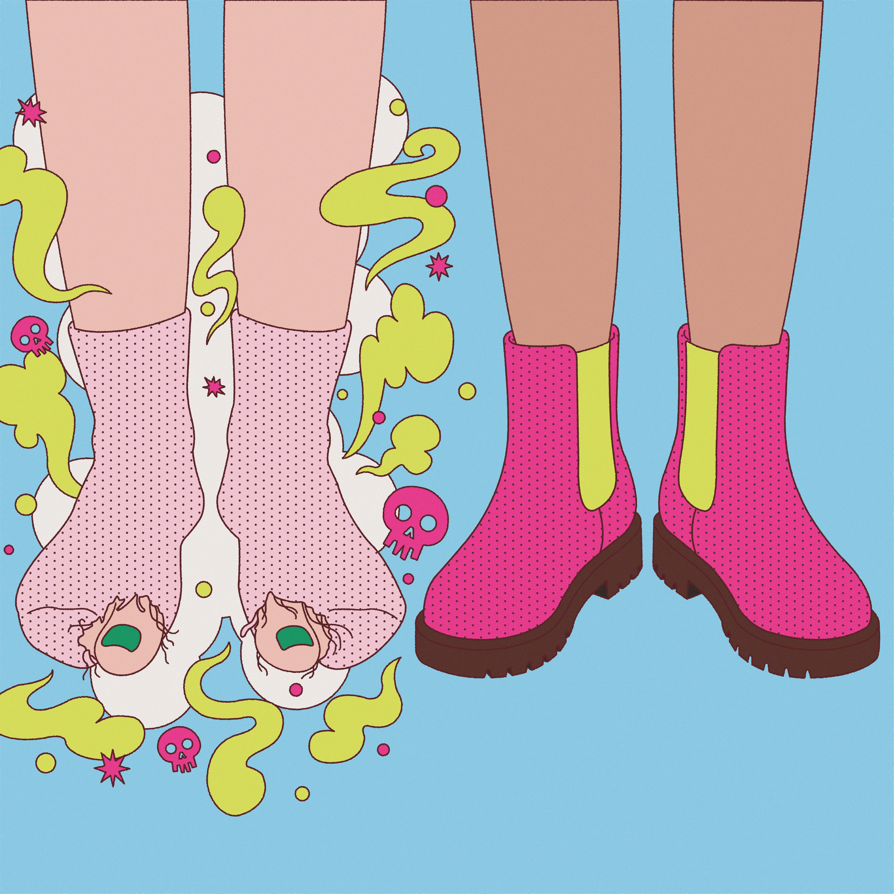

Turn off
the
switch
조용한 카페에 앉아 신발을 벗었는데 구멍 난 양말이 쏙 튀어나온 상황, 순간 카페에 있는 사람들 모두가 내 발끝만 쳐다본 것만 같은 상황이다. 근데 과연 진짜 그럴까?


조용한 카페에 앉아 신발을 벗었는데 구멍 난 양말이 쏙 튀어나온 상황, 순간 카페에 있는 사람들 모두가 내 발끝만 쳐다본 것만 같은 상황이다. 근데 과연 진짜 그럴까?